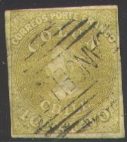
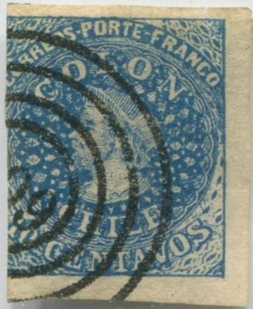
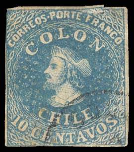
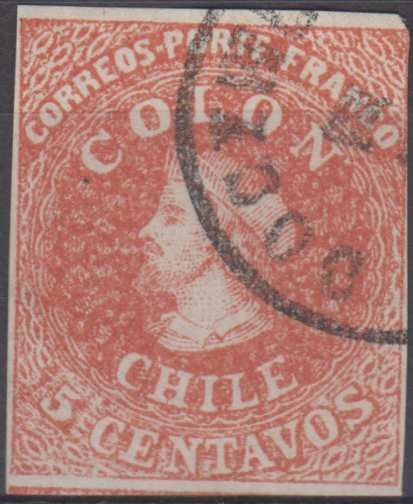
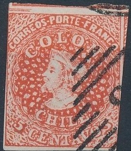
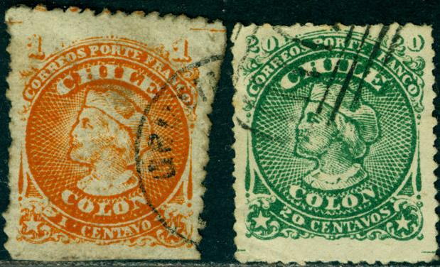
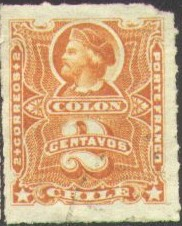
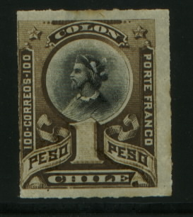

Return To Catalogue - Chili 1900-1920 - Chili miscellaneous
Note: on my website many of the
pictures can not be seen! They are of course present in the
catalogue;
contact me if you want to purchase it.



1 c yellow 5 c red 10 c blue 20 c green

(Watermark on the 20 c stamp)
For the specialist, these stamp have a watermark consisting of the value of the stamp (for example '5' for the 5 c) value. The values 5 c and 10 c were issued first with slightly smaller watermark. Later a larger watermark was introduced. Futhermore local prints and London prints can be distinghuished for the 5 c and 10 c.
Value of the stamps |
|||
vc = very common c = common * = not so common ** = uncommon |
*** = very uncommon R = rare RR = very rare RRR = extremely rare |
||
| Value | Unused | Used | Remarks |
| 1 c | *** | ** | |
| 5 c | *** | * | Cheapest type |
| 10 c | *** | * | Cheapest type |
| 20 c | R | *** | |
I've been told that the next stamps are Hahn reprints of the 20 c in wrong colours, they have a 'Star CHILE' watermark or are unwatermarked. They seem to have been made in 1910. According to http://www.sociedadfilatelica.cl/webarticulos/reimpresionhahn.html, mysteriously the printing plates ended up in Hamburg in the hands of Dr. Hugo Hahn in 1909 or 1910, with some kind of involvement of the count of Welczeck. In order to mark the centennial of independence, it was decided to make reprints of these stamps in the same colors as the originals. Any proofs and misprints were to be destroyed. After considerable noise from the public, it was decided on 5 August 1910 not to proceed and burn all the reprints. No mention was made of proofs and misprints though, such that these survived.
(Hahn reprints with star watermark and wrong colours, reduced
sizes)

(Hahn reprint)


Some Hahn reprints with watermark 'Star CHILE'
I have seen a sheet of these forgeries (3 rows of 10) of these Hahn reprints, where parts of the adjacent stamps are also partly printed.

A Hahn reprint with a '5 5 CINCO PESOS' overprint, they also
exists with 'UN PESO', 'VEINTE PESOS' and 'DIEZ PESOS' overprints
(even printed side by side).
Forgeries, examples:

The second forgery in the above picture is in the wrong colour! The first stamp can be recognized by its spots in the central circle. It is the first forgery mentioned in Album Weeds. Some other examples of this forgery:
   


(Right image obtained from forgeries idenfication site:
http://geocities.com/claghorn1p/of Bill Claghorn)
I have also seen the 10 c value of this same forgery. These forgeries often carry a typical 'VF' cancel that can be found on forgeries of many other countries. Also "909" and "8" cancels.
The above sheet of forgeries also is printed in the wrong colours.

Possibly an Oneglia forgery of the 20 c value. The second image
has a bars with "G" cancel as found on many other
Oneglia forgeries.


Other primitive forgeries.

These are cuts from a Hugo Griebert advertisment. There are curls
at the bottom and the right hand side which shouldn't be there.
It is part of a label with a Newfoundland triangle and a Barbados
6 pence reproduction.
1 c orange 2 c black 5 c red 10 c blue 20 c green
The perforation of these stamps is 12.
Value of the stamps |
|||
vc = very common c = common * = not so common ** = uncommon |
*** = very uncommon R = rare RR = very rare RRR = extremely rare |
||
| Value | Unused | Used | Remarks |
| 1 c | * | * | |
| 2 c | * | * | |
| 5 c | ** | vc | |
| 10 c | * | c | |
| 20 c | ** | c | |

Spiro forgeries, reduced sizes; note that the '2' and the '0's
are too far apart in the 20 c value.
Presumably the same forgery with a "909" cancel.

(Spiro forgery, image obtained from forgeries idenfication site:
http://geocities.com/claghorn1p/of Bill Claghorn)
Spiro has made forgeries of these stamps. The genuine stamps are engraved, the forgeries are lithographed. There is a thick coloured line around the head of Columbus in the forgeries, this line is absent in the genuine stamps. I have seen all values of this particular forgery.

Forgery of the 10 c, it appears to me that this is a cut out from
some kind of souvenir card.
I've also seen a 20 c green stamps chemically changed into a 20 c blue stamp.
A 5 c stamp with a forged 'FRANCA AREQUIPA' cancel.




1 c grey 1 c green 2 c orange 2 c red 5 c blue (1883) 5 c red (2 types) 10 c blue 10 c orange 15 c grey 20 c green 20 c grey 25 c brown 30 c red 50 c violet (1878) Larger size

1 P brown and black Surcharged
'5' on 30 c red (1901)
These stamps are rouletted
Value of the stamps |
|||
vc = very common c = common * = not so common ** = uncommon |
*** = very uncommon R = rare RR = very rare RRR = extremely rare |
||
| Value | Unused | Used | Remarks |
| 1 c grey | * | c | |
| 1 c green | c | vc | Exists in two types: with or without ornaments below '1' |
| 2 c orange | ** | * | |
| 2 c red | c | vc | Exists in two types: with or without ornaments below '2' (see images below) |
| 5 c blue | c | vc | |
| 5 c red | ** | c | Two types |
| 10 c blue | * | c | |
| 10 c orange | * | vc | |
| 15 c grey | * | c | |
| 20 c green | ** | * | |
| 20 c grey | * | c | |
| 25 c | * | c | |
| 30 c | * | * | |
| 50 c | c | c | |
| 1 P | * | c | |
| 5 c on 30 c | c | c | Exists with inverted, double and double inverted surcharges |
The two types of the 2 c red:


Apparently the forger Fournier made forgeries of the '5'
surcharge, in this picture this forged surcharge is shown as it
is presented in 'The Fournier Album of Philatelic Forgeries',
reduced size. I presume Fournier used this surcharge to make
forged double surcharges.

Forged double overprint, the second inverted overprint is much
lighter in color than the first overprint.
Stamps - Briefmarken - Timbres-Poste - Postzegels - Francobolli - Estampillas
{kind=link}
{kind=link}
{kind=link}
{kind=link}
{kind=link}